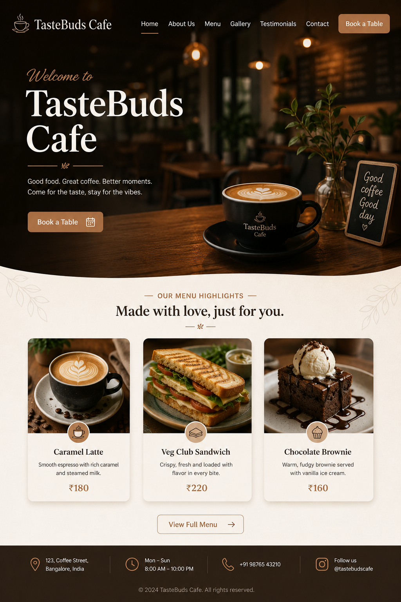

Project 01
TasteBuds Café
A basic HTML and CSS landing page built to practice core layout skills: a styled navigation bar, a hero section with a call-to-action button, and a three-column card layout built with flexbox. My first project coded fully from a blank page.